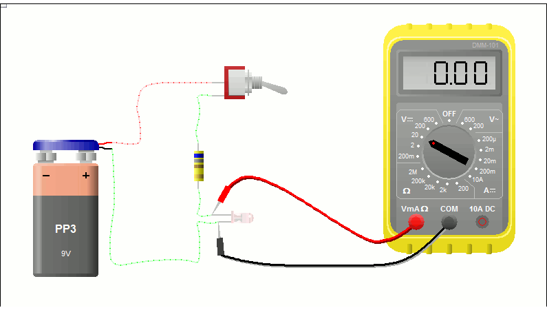

Poner el multimetro en medicion de voltaje contínuo, conectar el cable negro en COM y el cable rojo en VmA(ohm). Luego conectar el cable rojo al ánodo del led Y el cable negro al cátodo del led. El LED debe estar conectado a una fuente o pila con una recistecia.
Para Medir la caida de tension en el diodo Zener debe estar conectado en inversa. Poner el multimetro en medicion de voltaje contínuo, conectar el cable negro en COM y el cable rojo en VmA(ohm).Luego conectar el cable rojo al cátodo del diodo Y el cable negro al ánodo del diodo. Poner una resistencia entre el diodo y la fuente o pila.
Para Medir la caida de tension en un diodo de forma dircecta debe estar conectado el ánodo con el positivo y el cátodo con el negativo. Poner el multimetro en medicion de voltaje contínuo, conectar el cable negro en COM y el cable rojo en VmA(ohm). Luego conectar el cable rojo al ánodo del diodo Y el cable negro al cátodo del diodo. Poner una resitencia entre el diodo y el positivo.
Para medir la caida de tension en un diodo de forma inversa debe estar conectado el ánodo con el negativo y el cátodo con el positivo de la fuente o pila. Poner el multimetro en medicion de voltaje contínuo, conectar el cable negro en COM y el cable rojo en VmA(ohm).Luego conectar el cable rojo al cátodo del diodo Y el cable negro al ánodo del diodo. Poner una resistencia entre el diodo y la fuente o pila.